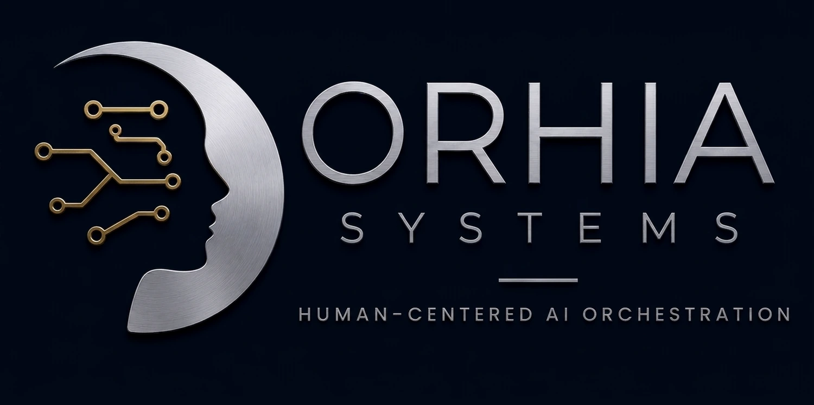

Des processus qui s'exécutent seuls.
Des décisions qui restent les vôtres.
Nous transformons les tâches manuelles et chronophages
(traitement de documents,
demandes clients, reporting)
en systèmes automatisés augmentés par l'IA,
où l'humain garde le contrôle sur ce qui compte vraiment.
Trier → Structurer → Exploiter → Evaluer → Agir
Par souci de confidentialité, les exemples présentés ci-dessous s'appuient sur des données fictives : néanmoins, il s'agit exactement du type de systèmes déployés chez nos clients.
Cinq systèmes, une même architecture.
Chacun répond à un problème
universel d'entreprise
(trier, structurer, exploiter, évaluer, agir)
tous construits
sur un principe non négociable :
l'IA n'agit jamais seule sur ce qui engage
votre entreprise.
Router les demandes entrantes
Des dizaines de demandes arrivent chaque jour
(email, formulaire, message
client) et chacune attend un tri manuel avant même d'être traitée.
Chaque demande est comprise, classée et routée automatiquement vers la bonne équipe. Les cas urgents sont toujours signalés à un humain.
Transformer tout document en données exploitables
Factures, devis, CV, contrats : des heures perdues chaque semaine à ressaisir des informations qui existent déjà, sur papier ou en PDF.
Un document déposé devient une donnée structurée en quelques secondes, avec contrôle humain automatique sur les montants sensibles.
Interroger la connaissance interne, sans jamais inventer
L'information existe quelque part dans vos procédures internes, mais la retrouver prend souvent plus de temps que de la redemander à un collègue.
Une question, une réponse sourcée, immédiatement, et un aveu honnête
quand l'information n'existe pas,
plutôt qu'une réponse inventée.
Des données brutes à la recommandation argumentée
Le reporting hebdomadaire est manuel, chronophage, et arrive toujours après que les décisions auraient dû être prises.
Les indicateurs sont calculés avec exactitude, puis interprétés par l'IA, avec évolutions, points d'attention et recommandations générés chaque semaine.
Une instruction en langage naturel, une action vérifiée
Une tâche simple (relancer un prospect, créer un suivi) prend souvent plus de temps à saisir dans le CRM qu'à décider.
Une instruction en langage naturel devient une action réelle, mais seulement après vérification de l'existence de la donnée concernée.
Un vrai système complet,
pensé pour votre activité.
Discutons de votre projet.
Un process à digitaliser, un outil interne à créer, une automatisation à mettre en place ? Décrivez-nous votre besoin, nous revenons vers vous rapidement.